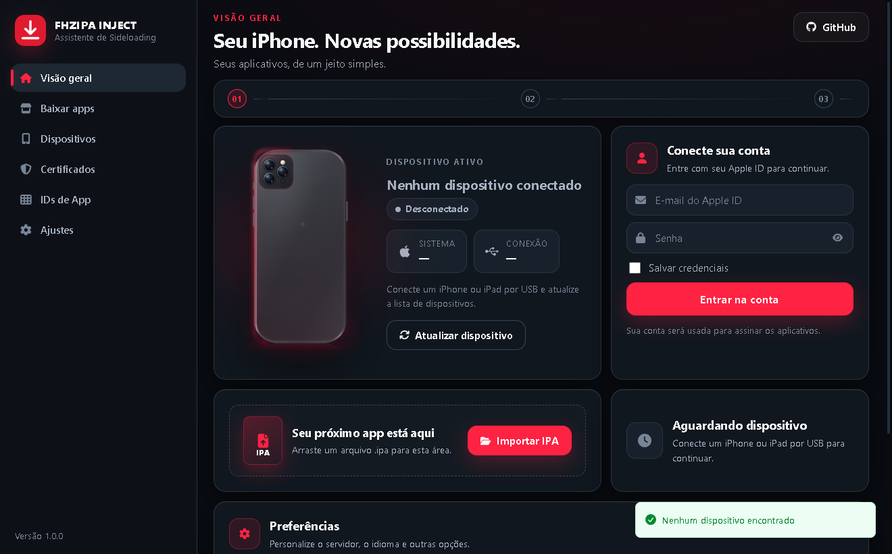

Aplicativo para Windows
Instale aplicativos .ipa no seu iPhone ou iPad, direto do computador.
O FHZIPA INJECT assina e instala aplicativos no seu aparelho usando a sua própria conta Apple ID. Tem loja de IPAs integrada, pareamento, certificados de desenvolvimento e um registro de diagnóstico que mostra o que deu errado.
O download começa quando você clica no botão.

O que ele faz
Recursos que já estão prontos
Tudo abaixo é funcionalidade entregue e verificada nesta build. Não há item experimental em produção.
-
Login com Apple ID e 2FA
A autenticação é feita diretamente com os servidores da Apple, incluindo o código de dois fatores. O aplicativo não tem servidor próprio de credenciais.
-
Detecção de aparelho por USB
O iPhone ou iPad conectado aparece na lista de dispositivos e pode ser selecionado com um clique. Usa o serviço Apple Mobile Device Support, que vem com o iTunes ou o Apple Devices.
-
Loja de IPAs integrada
Cinco catálogos públicos — IPAOMTK, iAppStores, GitHub, iPA Library e IPAJB — com busca, categorias e download. Quando o mesmo aplicativo existe em mais de um lugar, o FHZIPA INJECT mede a velocidade de cada servidor e usa o mais rápido.
-
Instalação com o seu certificado
Assina e instala um arquivo .ipa usando os certificados de desenvolvimento da sua conta. Também dá para importar um .ipa que você já tenha em mãos.
-
Pareamento e App IDs
Exporte, importe e reenvie o arquivo de pareamento, e acompanhe os App IDs registrados na conta, com o limite de criação da Apple em mente.
-
Diagnóstico com histórico
Cada etapa aparece na tela enquanto acontece, e o registro completo fica gravado em arquivo para você conferir o motivo de uma falha.
Como é por dentro
Capturas reais da build atual
Estas telas são da versão 1.0.0 que está sendo distribuída, com o aplicativo em execução no Windows.
Passo a passo
Como começar
Do download ao aplicativo instalado, contando o que você precisa ter em mãos.
-
Baixe o instalador
Um arquivo .exe de 67,5 MB. Ele já traz o runtime necessário: não é preciso instalar nada antes.
-
Instale
Abra o instalador e escolha a pasta. Se escolher uma pasta do sistema, o Windows pede autorização de administrador. Ao final, a tela confirma que a instalação foi verificada.
-
Instale o iTunes ou o Apple Devices
É ele que fornece o serviço Apple Mobile Device Support, sem o qual o aplicativo não encontra o iPhone. Baixe na apple.co/ms.
-
Conecte e desbloqueie o aparelho
Ligue o iPhone ou o iPad por cabo, desbloqueie a tela e toque em Confiar quando o aparelho perguntar.
-
Abra o FHZIPA INJECT e escolha o aparelho
Na tela Visão geral, use Atualizar dispositivo e selecione o aparelho que aparecer na lista.
-
Entre com a sua conta Apple ID
A Apple pede o código de dois fatores. As credenciais ficam guardadas no chaveiro do Windows, ou na sua conta, se você marcar a opção de salvar.
-
Baixe e instale
Vá em Baixar apps e escolha um aplicativo, ou use Importar IPA com um .ipa que você já tenha. O progresso e o registro ficam visíveis durante a instalação.
No iOS 16 ou superior pode ser necessário ativar Ajustes › Privacidade e Segurança › Modo de Desenvolvedor e reiniciar o aparelho.
Antes de baixar
Requisitos
Para instalar o aplicativo
- Windows 10 ou 11, de 64 bits (x64)
- Espaço em disco para cerca de 70 MB do instalador e 24 MB do aplicativo
- WebView2 Runtime — já vem instalado no Windows 11 e no Windows 10 a partir da atualização 1803
- Conta do Windows com direito de instalar programas
Para usar o sideloading
- iTunes ou Apple Devices instalado
- Cabo USB e um iPhone ou iPad desbloqueado
- Conta Apple ID válida, com o 2FA ativado
- Conexão com a internet para autenticar e conversar com a Apple
Limites de uma conta Apple ID gratuita
Estes limites vêm da Apple, não do FHZIPA INJECT:
- Os aplicativos assinados expiram em 7 dias e precisam ser reinstalados.
- Em geral dá para manter 3 aplicativos assinados por aparelho.
- A Apple limita a criação de App IDs a cerca de 10 por semana.
- Uma conta paga do Apple Developer Program remove o limite de 7 dias.
Plataformas ainda não suportadas: macOS e Linux. Não existem pacotes validados para elas, por isso não há botão de download para esses sistemas.
Baixar
Instalador do FHZIPA INJECT
Um único instalador para Windows. Ele já contém o aplicativo e o que ele precisa para funcionar.
O download começa quando você clica no botão.
O download começa só quando você clica. O arquivo vai para a pasta normal de downloads do navegador, a menos que o navegador pergunte outro destino.
- Arquivo
- FHZIPA_INJECT_Setup.exe
- Versão
- 1.0.0
- Plataforma
- Windows 10 ou 11
- Arquitetura
- x64 (64 bits)
- Tamanho
- 67,5 MB
- Data desta versão
- 21 de outubro de 2026
- Assinatura digital
- Não assinado digitalmente
Sobre a assinatura digital
Este instalador não é assinado digitalmente. O Windows pode mostrar um aviso de "aplicativo desconhecido" ou de proteção do SmartScreen. Isso é o comportamento esperado de um instalador pessoal e não indica arquivo corrompido. Confira sempre o resumo SHA-256 abaixo.
Instalação em poucos passos
Abra o arquivo, escolha a pasta e conclua. Se a pasta escolhida ficar dentro de "Program Files", o Windows vai pedir autorização de administrador. Nada mais precisa ser instalado antes.
Resumo SHA-256 do instalador
743e40a4a176962e62e50a564661e83d80af6406872dbfefe1bfb7bf6572aef5
Para conferir, no Prompt de comando ou no PowerShell:
Get-FileHash .\FHZIPA_INJECT_Setup.exe -Algorithm SHA256
Perguntas
Dúvidas frequentes
Para que serve o FHZIPA INJECT?
Para instalar aplicativos .ipa no seu iPhone ou iPad a partir de um computador Windows, usando a sua própria conta Apple ID. Ele assina o aplicativo com um certificado de desenvolvimento da sua conta e instala no aparelho conectado por cabo.
Quais computadores são compatíveis?
Windows 10 ou 11, de 64 bits. Não há pacote para Windows de 32 bits, nem para macOS ou Linux.
Preciso de conta Apple ID?
Sim. A autenticação é feita nos servidores da Apple, com o código de dois fatores. Uma conta gratuita funciona, com os limites de 7 dias descritos acima.
Para onde vão minhas credenciais?
Diretamente para os servidores da Apple, durante a autenticação. O FHZIPA INJECT não tem servidor próprio de coleta. Se você marcar a opção de guardar, a credencial fica no chaveiro do Windows, sob o seu usuário.
Preciso de cabo?
Sim. A detecção do aparelho e a instalação são feitas por USB, usando o serviço Apple Mobile Device Support.
Preciso instalar drivers ou ferramentas extras?
Só o iTunes ou o Apple Devices, que já traz o Apple Mobile Device Support. Não é preciso instalar driver de iPhone separado nem Visual Studio, Node ou Rust.
O que acontece se o Windows mostrar um aviso?
Como o instalador não é assinado digitalmente, o Windows pode avisar que o editor é desconhecido ou abrir a proteção do SmartScreen. Confira o resumo SHA-256 da seção de download: se bater, o arquivo está íntegro. O aplicativo em si também não é assinado, então o Windows pode avisar na primeira execução.
Como atualizo?
Baixe a versão nova e instale por cima da anterior. Os seus dados, logs e certificados continuam onde estão, e o desinstalador continua registrado em Aplicativos instalados.
Como desinstalo?
Em Configurações › Aplicativos instalados, procure por FHZIPA INJECT e escolha Desinstalar. A pasta do programa, os atalhos e o registro são removidos. Os seus dados e as credenciais guardadas no chaveiro não são apagados.
Os aplicativos assinados expiram?
Sim, em 7 dias, quando você usa uma conta Apple ID gratuita. Depois disso é preciso instalar de novo. Uma conta paga do Apple Developer Program remove esse limite.
É um aplicativo oficial da Apple?
Não. O FHZIPA INJECT é um projeto independente, sem vínculo com a Apple, e usa o sideloading, que pode contrariar os termos de serviço da Apple. Use apenas com a sua própria conta e com aplicativos que você tenha o direito de instalar.
Este projeto é o original ou tem licença aberta?
É uma modificação do iloader, de nab138, sob a licença MIT. O código-fonte deste projeto é privado e não está publicado. A atribuição completa está no arquivo NOTICE que acompanha a distribuição.
Transparência
Privacidade e transparência
Este site
- Não usa analytics, rastreadores, pixel de publicidade ou cookies não essenciais.
- Não tem formulário de contato nem recolhe dados de quem visita.
- Não pede cadastro para baixar. O instalador é um link direto.
- Todo o conteúdo é estático; nada é enviado a um servidor.
O aplicativo, que é uma coisa separada
- Guarda preferências e logs em
%APPDATA%\app.fhzipa.inject\logsdo seu computador. - As credenciais ficam no chaveiro do Windows, se você pedir para guardar.
- Durante a autenticação, as credenciais vão direto para os servidores da Apple.
- O servidor Anisette padrão é o
ani2.stikstore.app, e pode ser trocado nas configurações do aplicativo. Use apenas servidores em que você confia.
Laços com terceiros
- Este projeto não tem vínculo oficial com a Apple, com a nab138 ou com os catálogos de aplicativos citados.
- Os nomes dos catálogos e dos aplicativos citados pertencem aos seus respectivos donos.
- O instalador não é assinado digitalmente e a verificação de integridade depende do SHA-256 publicado aqui.